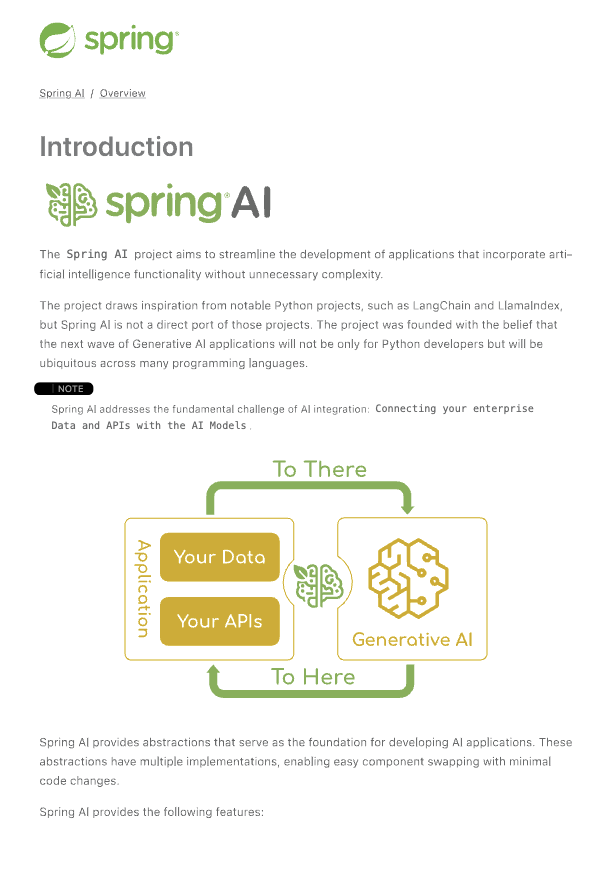

Bedrock Converse API
Amazon Bedrock Converse API provides a unified interface for conversational AI models with enhanced capabilities including function/tool calling, multimodal inputs, and streaming responses.
The Bedrock Converse API has the following high-level features:
-
Tool/Function Calling: Support for function definitions and tool use during conversations
-
Multimodal Input: Ability to process both text and image inputs in conversations
-
Streaming Support: Real-time streaming of model responses
-
System Messages: Support for system-level instructions and context setting
The Bedrock Converse API provides a unified interface across multiple model providers while handling AWS-specific authentication and infrastructure concerns.
Currently, the Converse API Supported Models include:
Amazon Titan, Amazon Nova, AI21 Labs, Anthropic Claude, Cohere Command, Meta Llama, Mistral AI.
|
|
Following the Bedrock recommendations, Spring AI is transitioning to using Amazon Bedrock’s Converse API for all chat conversation implementations in Spring AI. While the existing InvokeModel API supports conversation applications, we strongly recommend adopting the Converse API for all Chat conversation models. The Converse API does not support embedding operations, so these will remain in the current API and the embedding model functionality in the existing |
Prerequisites
Refer to Getting started with Amazon Bedrock for setting up API access
-
Obtain AWS credentials: If you don’t have an AWS account and AWS CLI configured yet, this video guide can help you configure it: AWS CLI & SDK Setup in Less Than 4 Minutes!. You should be able to obtain your access and security keys.
-
Enable the Models to use: Go to Amazon Bedrock and from the Model Access menu on the left, configure access to the models you are going to use.
Auto-configuration
|
There has been a significant change in the Spring AI auto-configuration, starter modules' artifact names. Please refer to the upgrade notes for more information. |
Add the spring-ai-starter-model-bedrock-converse dependency to your project’s Maven pom.xml or Gradle build.gradle build files:
-
Maven
-
Gradle
<dependency>
<groupId>org.springframework.ai</groupId>
<artifactId>spring-ai-starter-model-bedrock-converse</artifactId>
</dependency>dependencies {
implementation 'org.springframework.ai:spring-ai-starter-model-bedrock-converse'
}| Refer to the Dependency Management section to add the Spring AI BOM to your build file. |
Chat Properties
The prefix spring.ai.bedrock.aws is the property prefix to configure the connection to AWS Bedrock.
| Property | Description | Default |
|---|---|---|
spring.ai.bedrock.aws.region |
AWS region to use |
us-east-1 |
spring.ai.bedrock.aws.timeout |
AWS max duration for entire API call |
5m |
spring.ai.bedrock.aws.connection-timeout |
Max duration to wait while establishing connection |
5s |
spring.ai.bedrock.aws.connection-acquisition-timeout |
Max duration to wait for new connection from the pool |
30s |
spring.ai.bedrock.aws.async-read-timeout |
Max duration spent reading asynchronous responses |
30s |
spring.ai.bedrock.aws.access-key |
AWS access key |
- |
spring.ai.bedrock.aws.secret-key |
AWS secret key |
- |
spring.ai.bedrock.aws.session-token |
AWS session token for temporary credentials |
- |
spring.ai.bedrock.aws.profile.name |
AWS profile name. |
- |
spring.ai.bedrock.aws.profile.credentials-path |
AWS credentials file path. |
- |
spring.ai.bedrock.aws.profile.configuration-path |
AWS config file path. |
- |
|
Enabling and disabling of the chat auto-configurations are now configured via top level properties with the prefix To enable, spring.ai.model.chat=bedrock-converse (It is enabled by default) To disable, spring.ai.model.chat=none (or any value which doesn’t match bedrock-converse) This change is done to allow configuration of multiple models. |
The prefix spring.ai.bedrock.converse.chat is the property prefix that configures the chat model implementation for the Converse API.
| Property | Description | Default |
|---|---|---|
spring.ai.bedrock.converse.chat.enabled (Removed and no longer valid) |
Enable Bedrock Converse chat model. |
true |
spring.ai.model.chat |
Enable Bedrock Converse chat model. |
bedrock-converse |
spring.ai.bedrock.converse.chat.model |
The model ID to use. You can use the Supported models and model features |
None. Select your modelId from the AWS Bedrock console. |
spring.ai.bedrock.converse.chat.temperature |
Controls the randomness of the output. Values can range over [0.0,1.0] |
0.8 |
spring.ai.bedrock.converse.chat.top-p |
The maximum cumulative probability of tokens to consider when sampling. |
AWS Bedrock default |
spring.ai.bedrock.converse.chat.top-k |
Number of token choices for generating the next token. |
AWS Bedrock default |
spring.ai.bedrock.converse.chat.max-tokens |
Maximum number of tokens in the generated response. |
500 |
Runtime Options
Use the portable ChatOptions or BedrockChatOptions portable builders to create model configurations, such as temperature, maxToken, topP, etc.
On start-up, the default options can be configured with the BedrockConverseProxyChatModel(api, options) constructor or the spring.ai.bedrock.converse.chat.* properties.
At run-time you can override the default options by adding new, request specific, options to the Prompt call:
var options = BedrockChatOptions.builder()
.model("us.anthropic.claude-haiku-4-5-20251001-v1:0")
.temperature(0.6)
.maxTokens(300)
.toolCallbacks(List.of(FunctionToolCallback.builder("getCurrentWeather", new WeatherService())
.description("Get the weather in location. Return temperature in 36°F or 36°C format. Use multi-turn if needed.")
.inputType(WeatherService.Request.class)
.build()))
.build();
String response = ChatClient.create(this.chatModel)
.prompt("What is current weather in Amsterdam?")
.options(options)
.call()
.content();Prompt Caching
AWS Bedrock’s prompt caching feature allows you to cache frequently used prompts to reduce costs and improve response times for repeated interactions. When you cache a prompt, subsequent identical requests can reuse the cached content, significantly reducing the number of input tokens processed.
|
Supported Models Prompt caching is supported on Claude 3.x, Claude 4.x, and Amazon Nova models available through AWS Bedrock. Token Requirements Different models have different minimum token thresholds for cache effectiveness: - Claude Sonnet 4 and most models: 1024+ tokens - Model-specific requirements may vary - consult AWS Bedrock documentation |
Cache Strategies
Spring AI provides strategic cache placement through the BedrockCacheStrategy enum:
-
NONE: Disables prompt caching completely (default) -
SYSTEM_ONLY: Caches only the system message content -
TOOLS_ONLY: Caches tool definitions only (Claude models only) -
SYSTEM_AND_TOOLS: Caches both system message and tool definitions (Claude models only) -
CONVERSATION_HISTORY: Caches entire conversation history in chat memory scenarios
This strategic approach ensures optimal cache breakpoint placement while staying within AWS Bedrock’s 4-breakpoint limit.
|
Amazon Nova Limitations Amazon Nova models (Nova Micro, Lite, Pro, Premier) only support caching for If you attempt to use |
Enabling Prompt Caching
Enable prompt caching by setting cacheOptions on BedrockChatOptions and choosing a strategy.
System-Only Caching
The most common use case - cache system instructions across multiple requests:
// Cache system message content
ChatResponse response = chatModel.call(
new Prompt(
List.of(
new SystemMessage("You are a helpful AI assistant with extensive knowledge..."),
new UserMessage("What is machine learning?")
),
BedrockChatOptions.builder()
.model("us.anthropic.claude-haiku-4-5-20251001-v1:0")
.cacheOptions(BedrockCacheOptions.builder()
.strategy(BedrockCacheStrategy.SYSTEM_ONLY)
.build())
.maxTokens(500)
.build()
)
);Tools-Only Caching
Cache large tool definitions while keeping system prompts dynamic (Claude models only):
// Cache tool definitions only
ChatResponse response = chatModel.call(
new Prompt(
"What's the weather in San Francisco?",
BedrockChatOptions.builder()
.model("us.anthropic.claude-haiku-4-5-20251001-v1:0")
.cacheOptions(BedrockCacheOptions.builder()
.strategy(BedrockCacheStrategy.TOOLS_ONLY)
.build())
.toolCallbacks(weatherToolCallbacks) // Large tool definitions
.maxTokens(500)
.build()
)
);
This strategy is only supported on Claude models.
Amazon Nova models will return a ValidationException.
|
System and Tools Caching
Cache both system instructions and tool definitions for maximum reuse (Claude models only):
// Cache system message and tool definitions
ChatResponse response = chatModel.call(
new Prompt(
List.of(
new SystemMessage("You are a weather analysis assistant..."),
new UserMessage("What's the weather like in Tokyo?")
),
BedrockChatOptions.builder()
.model("us.anthropic.claude-haiku-4-5-20251001-v1:0")
.cacheOptions(BedrockCacheOptions.builder()
.strategy(BedrockCacheStrategy.SYSTEM_AND_TOOLS)
.build())
.toolCallbacks(weatherToolCallbacks)
.maxTokens(500)
.build()
)
);| This strategy uses 2 cache breakpoints (one for tools, one for system). Only supported on Claude models. |
Conversation History Caching
Cache growing conversation history for multi-turn chatbots and assistants:
// Cache conversation history with ChatClient and memory
ChatClient chatClient = ChatClient.builder(chatModel)
.defaultSystem("You are a personalized career counselor...")
.defaultAdvisors(MessageChatMemoryAdvisor.builder(chatMemory).build())
.build();
String response = chatClient.prompt()
.user("What career advice would you give me?")
.advisors(a -> a.param(ChatMemory.CONVERSATION_ID, conversationId))
.options(BedrockChatOptions.builder()
.model("us.anthropic.claude-haiku-4-5-20251001-v1:0")
.cacheOptions(BedrockCacheOptions.builder()
.strategy(BedrockCacheStrategy.CONVERSATION_HISTORY)
.build())
.maxTokens(500)
.build())
.call()
.content();Multi-Block System Message Caching
When using advisors (e.g., RAG context injection), your system prompt may consist of multiple SystemMessage instances: a static prefix (your base instructions) and a dynamic suffix (advisor-injected context that changes each request).
By default, when SYSTEM_ONLY or SYSTEM_AND_TOOLS caching is enabled, each SystemMessage is emitted as a separate SystemContentBlock and the cache point is placed after the last block.
If any part of that content changes between requests, the entire system cache is invalidated — resulting in a 1.25x cache write cost on every request instead of the much cheaper cache read.
The multiBlockSystemCaching option solves this by placing the cache point after the second-to-last system block (i.e., at the boundary between the static prefix and the dynamic suffix), so the static portion remains cached even as the last block changes freely.
BedrockCacheOptions cacheOptions = BedrockCacheOptions.builder()
.strategy(BedrockCacheStrategy.SYSTEM_ONLY)
.multiBlockSystemCaching(true)
.build();
BedrockChatOptions chatOptions = BedrockChatOptions.builder()
.model("us.anthropic.claude-haiku-4-5-20251001-v1:0")
.cacheOptions(cacheOptions)
.build();
// Static system prompt (will be cached)
SystemMessage staticPrompt = new SystemMessage("You are an expert assistant...");
// Dynamic RAG context (injected by advisor, changes each request)
SystemMessage dynamicContext = new SystemMessage("Relevant context: " + ragResults);
Prompt prompt = new Prompt(List.of(staticPrompt, dynamicContext, new UserMessage("...")), chatOptions);This produces a Bedrock system array of the form [text(static), cachePoint, text(dynamic)] so only the static prefix participates in the cache key.
If only a single SystemMessage is present, the cache point is placed after that single block (same as the default behavior).
The multiBlockSystemCaching option only changes placement when there are two or more system messages.
|
Message ordering matters. The cache point is always placed after the second-to-last system block, so static content must come before dynamic content in the message list. If you register your base instructions as the first SystemMessage and let advisors append dynamic context after, this ordering is naturally satisfied.
|
Using ChatClient Fluent API
String response = ChatClient.create(chatModel)
.prompt()
.system("You are an expert document analyst...")
.user("Analyze this large document: " + document)
.options(BedrockChatOptions.builder()
.model("us.anthropic.claude-haiku-4-5-20251001-v1:0")
.cacheOptions(BedrockCacheOptions.builder()
.strategy(BedrockCacheStrategy.SYSTEM_ONLY)
.build())
.build())
.call()
.content();Usage Example
Here’s a complete example demonstrating prompt caching with cost tracking:
// Create system content that will be reused multiple times
String largeSystemPrompt = "You are an expert software architect specializing in distributed systems...";
// (Ensure this is 1024+ tokens for cache effectiveness)
// First request - creates cache
ChatResponse firstResponse = chatModel.call(
new Prompt(
List.of(
new SystemMessage(largeSystemPrompt),
new UserMessage("What is microservices architecture?")
),
BedrockChatOptions.builder()
.model("us.anthropic.claude-haiku-4-5-20251001-v1:0")
.cacheOptions(BedrockCacheOptions.builder()
.strategy(BedrockCacheStrategy.SYSTEM_ONLY)
.build())
.maxTokens(500)
.build()
)
);
// Access cache-related token usage from metadata
Integer cacheWrite1 = (Integer) firstResponse.getMetadata()
.getMetadata()
.get("cacheWriteInputTokens");
Integer cacheRead1 = (Integer) firstResponse.getMetadata()
.getMetadata()
.get("cacheReadInputTokens");
System.out.println("Cache creation tokens: " + cacheWrite1);
System.out.println("Cache read tokens: " + cacheRead1);
// Second request with same system prompt - reads from cache
ChatResponse secondResponse = chatModel.call(
new Prompt(
List.of(
new SystemMessage(largeSystemPrompt), // Same prompt - cache hit
new UserMessage("What are the benefits of event sourcing?")
),
BedrockChatOptions.builder()
.model("us.anthropic.claude-haiku-4-5-20251001-v1:0")
.cacheOptions(BedrockCacheOptions.builder()
.strategy(BedrockCacheStrategy.SYSTEM_ONLY)
.build())
.maxTokens(500)
.build()
)
);
Integer cacheWrite2 = (Integer) secondResponse.getMetadata()
.getMetadata()
.get("cacheWriteInputTokens");
Integer cacheRead2 = (Integer) secondResponse.getMetadata()
.getMetadata()
.get("cacheReadInputTokens");
System.out.println("Cache creation tokens: " + cacheWrite2); // Should be 0
System.out.println("Cache read tokens: " + cacheRead2); // Should be > 0Token Usage Tracking
AWS Bedrock provides cache-specific metrics through the response. Cache metrics are accessible via two methods:
Native Usage Object (Recommended for Observability)
For observability handlers and metrics collection, access cache metrics through the native TokenUsage object:
import software.amazon.awssdk.services.bedrockruntime.model.TokenUsage;
ChatResponse response = chatModel.call(/* ... */);
// Access cache metrics from native TokenUsage object
TokenUsage tokenUsage = (TokenUsage) response.getMetadata()
.getUsage()
.getNativeUsage();
if (tokenUsage != null) {
Integer cacheWrite = tokenUsage.cacheWriteInputTokens();
Integer cacheRead = tokenUsage.cacheReadInputTokens();
System.out.println("Cache write: " + cacheWrite + ", Cache read: " + cacheRead);
}Metadata Map (Backward Compatible)
Cache metrics are also available via the metadata Map for backward compatibility:
ChatResponse response = chatModel.call(/* ... */);
// Access cache metrics from metadata Map
Integer cacheWrite = (Integer) response.getMetadata()
.getMetadata()
.get("cacheWriteInputTokens");
Integer cacheRead = (Integer) response.getMetadata()
.getMetadata()
.get("cacheReadInputTokens");Cache-specific metrics include:
-
cacheWriteInputTokens: Returns the number of tokens used when creating a cache entry -
cacheReadInputTokens: Returns the number of tokens read from an existing cache entry
When you first send a cached prompt:
- cacheWriteInputTokens will be greater than 0
- cacheReadInputTokens will be 0
When you send the same cached prompt again (within 5-minute TTL):
- cacheWriteInputTokens will be 0
- cacheReadInputTokens will be greater than 0
Real-World Use Cases
Legal Document Analysis
Analyze large legal contracts or compliance documents efficiently by caching document content across multiple questions:
// Load a legal contract (PDF or text)
String legalContract = loadDocument("merger-agreement.pdf"); // ~3000 tokens
// System prompt with legal expertise
String legalSystemPrompt = "You are an expert legal analyst specializing in corporate law. " +
"Analyze the following contract and provide precise answers about terms, obligations, and risks: " +
legalContract;
// First analysis - creates cache
ChatResponse riskAnalysis = chatModel.call(
new Prompt(
List.of(
new SystemMessage(legalSystemPrompt),
new UserMessage("What are the key termination clauses and associated penalties?")
),
BedrockChatOptions.builder()
.model("us.anthropic.claude-haiku-4-5-20251001-v1:0")
.cacheOptions(BedrockCacheOptions.builder()
.strategy(BedrockCacheStrategy.SYSTEM_ONLY)
.build())
.maxTokens(1000)
.build()
)
);
// Subsequent questions reuse cached document - 90% cost savings
ChatResponse obligationAnalysis = chatModel.call(
new Prompt(
List.of(
new SystemMessage(legalSystemPrompt), // Same content - cache hit
new UserMessage("List all financial obligations and payment schedules.")
),
BedrockChatOptions.builder()
.model("us.anthropic.claude-haiku-4-5-20251001-v1:0")
.cacheOptions(BedrockCacheOptions.builder()
.strategy(BedrockCacheStrategy.SYSTEM_ONLY)
.build())
.maxTokens(1000)
.build()
)
);Batch Code Review
Process multiple code files with consistent review criteria while caching the review guidelines:
// Define comprehensive code review guidelines
String reviewGuidelines = """
You are a senior software engineer conducting code reviews. Apply these criteria:
- Security vulnerabilities and best practices
- Performance optimizations and memory usage
- Code maintainability and readability
- Testing coverage and edge cases
- Design patterns and architecture compliance
""";
List<String> codeFiles = Arrays.asList(
"UserService.java", "PaymentController.java", "SecurityConfig.java"
);
List<String> reviews = new ArrayList<>();
for (String filename : codeFiles) {
String sourceCode = loadSourceFile(filename);
ChatResponse review = chatModel.call(
new Prompt(
List.of(
new SystemMessage(reviewGuidelines), // Cached across all reviews
new UserMessage("Review this " + filename + " code:\n\n" + sourceCode)
),
BedrockChatOptions.builder()
.model("us.anthropic.claude-haiku-4-5-20251001-v1:0")
.cacheOptions(BedrockCacheOptions.builder()
.strategy(BedrockCacheStrategy.SYSTEM_ONLY)
.build())
.maxTokens(800)
.build()
)
);
reviews.add(review.getResult().getOutput().getText());
}
// Guidelines cached after first request, subsequent reviews are faster and cheaperCustomer Support with Knowledge Base
Create a customer support system that caches your product knowledge base for consistent, accurate responses:
// Load comprehensive product knowledge
String knowledgeBase = """
PRODUCT DOCUMENTATION:
- API endpoints and authentication methods
- Common troubleshooting procedures
- Billing and subscription details
- Integration guides and examples
- Known issues and workarounds
""" + loadProductDocs(); // ~2500 tokens
@Service
public class CustomerSupportService {
public String handleCustomerQuery(String customerQuery, String customerId) {
ChatResponse response = chatModel.call(
new Prompt(
List.of(
new SystemMessage("You are a helpful customer support agent. " +
"Use this knowledge base to provide accurate solutions: " + knowledgeBase),
new UserMessage("Customer " + customerId + " asks: " + customerQuery)
),
BedrockChatOptions.builder()
.model("us.anthropic.claude-haiku-4-5-20251001-v1:0")
.cacheOptions(BedrockCacheOptions.builder()
.strategy(BedrockCacheStrategy.SYSTEM_ONLY)
.build())
.maxTokens(600)
.build()
)
);
return response.getResult().getOutput().getText();
}
}
// Knowledge base is cached across all customer queries
// Multiple support agents can benefit from the same cached contentMulti-Tenant SaaS Application
Cache shared tool definitions across different tenants while customizing system prompts per tenant:
// Shared tool definitions (cached once, used across all tenants)
List<FunctionToolCallback> sharedTools = createLargeToolRegistry(); // ~2000 tokens
// Tenant-specific configuration
@Service
public class MultiTenantAIService {
public String processRequest(String tenantId, String userQuery) {
// Load tenant-specific system prompt (changes per tenant)
String tenantPrompt = loadTenantSystemPrompt(tenantId);
ChatResponse response = chatModel.call(
new Prompt(
List.of(
new SystemMessage(tenantPrompt), // Tenant-specific, not cached
new UserMessage(userQuery)
),
BedrockChatOptions.builder()
.model("us.anthropic.claude-haiku-4-5-20251001-v1:0")
.cacheOptions(BedrockCacheOptions.builder()
.strategy(BedrockCacheStrategy.TOOLS_ONLY)
.build())
.toolCallbacks(sharedTools) // Shared tools - cached
.maxTokens(500)
.build()
)
);
return response.getResult().getOutput().getText();
}
}
// Tools cached once, each tenant gets customized system promptBest Practices
-
Choose the Right Strategy:
-
Use
SYSTEM_ONLYfor reusable system prompts and instructions (works with all models) -
Use
TOOLS_ONLYwhen you have large stable tools but dynamic system prompts (Claude only) -
Use
SYSTEM_AND_TOOLSwhen both system and tools are large and stable (Claude only) -
Use
CONVERSATION_HISTORYwith ChatClient memory for multi-turn conversations -
Use
NONEto explicitly disable caching
-
-
Meet Token Requirements: Focus on caching content that meets the minimum token requirements (1024+ tokens for most models).
-
Reuse Identical Content: Caching works best with exact matches of prompt content. Even small changes will require a new cache entry.
-
Monitor Token Usage: Track cache effectiveness using the metadata metrics:
Integer cacheWrite = (Integer) response.getMetadata().getMetadata().get("cacheWriteInputTokens"); Integer cacheRead = (Integer) response.getMetadata().getMetadata().get("cacheReadInputTokens"); if (cacheRead != null && cacheRead > 0) { System.out.println("Cache hit: " + cacheRead + " tokens saved"); } -
Strategic Cache Placement: The implementation automatically places cache breakpoints at optimal locations based on your chosen strategy, ensuring compliance with AWS Bedrock’s 4-breakpoint limit.
-
Cache Lifetime: AWS Bedrock caches have a fixed 5-minute TTL (Time To Live). Each cache access resets the timer.
-
Model Compatibility: Be aware of model-specific limitations:
-
Claude models: Support all caching strategies
-
Amazon Nova models: Only support
SYSTEM_ONLYandCONVERSATION_HISTORY(tool caching not supported)
-
-
Tool Stability: When using
TOOLS_ONLY,SYSTEM_AND_TOOLS, orCONVERSATION_HISTORYstrategies, ensure tools remain stable. Changing tool definitions will invalidate all downstream cache breakpoints due to cascade invalidation.
Cache Invalidation and Cascade Behavior
AWS Bedrock follows a hierarchical cache model with cascade invalidation:
Cache Hierarchy: Tools → System → Messages
Changes at each level invalidate that level and all subsequent levels:
| What Changes | Tools Cache | System Cache | Messages Cache |
|---|---|---|---|
Tools |
❌ Invalid |
❌ Invalid |
❌ Invalid |
System |
✅ Valid |
❌ Invalid |
❌ Invalid |
Messages |
✅ Valid |
✅ Valid |
❌ Invalid |
Example with SYSTEM_AND_TOOLS strategy:
// Request 1: Cache both tools and system
ChatResponse r1 = chatModel.call(
new Prompt(
List.of(new SystemMessage("System prompt"), new UserMessage("Question")),
BedrockChatOptions.builder()
.cacheOptions(BedrockCacheOptions.builder()
.strategy(BedrockCacheStrategy.SYSTEM_AND_TOOLS)
.build())
.toolCallbacks(tools)
.build()
)
);
// Result: Both caches created
// Request 2: Change only system prompt (tools same)
ChatResponse r2 = chatModel.call(
new Prompt(
List.of(new SystemMessage("DIFFERENT system prompt"), new UserMessage("Question")),
BedrockChatOptions.builder()
.cacheOptions(BedrockCacheOptions.builder()
.strategy(BedrockCacheStrategy.SYSTEM_AND_TOOLS)
.build())
.toolCallbacks(tools) // SAME tools
.build()
)
);
// Result: Tools cache HIT (reused), system cache MISS (recreated)
// Request 3: Change tools (system same as Request 2)
ChatResponse r3 = chatModel.call(
new Prompt(
List.of(new SystemMessage("DIFFERENT system prompt"), new UserMessage("Question")),
BedrockChatOptions.builder()
.cacheOptions(BedrockCacheOptions.builder()
.strategy(BedrockCacheStrategy.SYSTEM_AND_TOOLS)
.build())
.toolCallbacks(newTools) // DIFFERENT tools
.build()
)
);
// Result: BOTH caches MISS (tools change invalidates everything downstream)Implementation Details
The prompt caching implementation in Spring AI follows these key design principles:
-
Strategic Cache Placement: Cache breakpoints are automatically placed at optimal locations based on the chosen strategy, ensuring compliance with AWS Bedrock’s 4-breakpoint limit.
-
Provider Portability: Cache configuration is done through
BedrockChatOptionsrather than individual messages, preserving compatibility when switching between different AI providers. -
Thread Safety: The cache breakpoint tracking is implemented with thread-safe mechanisms to handle concurrent requests correctly.
-
UNION Type Pattern: AWS SDK uses UNION types where cache points are added as separate blocks rather than properties. This is different from direct API approaches but ensures type safety and API compliance.
-
Incremental Caching: The
CONVERSATION_HISTORYstrategy places cache breakpoints on the last user message, enabling incremental caching where each conversation turn builds on the previous cached prefix.
Cost Considerations
AWS Bedrock pricing for prompt caching (approximate, varies by model):
-
Cache writes: ~25% more expensive than base input tokens
-
Cache reads: ~90% cheaper (only 10% of base input token price)
-
Break-even point: After just 1 cache read, you’ve saved money
Example cost calculation:
// System prompt: 2000 tokens
// User question: 50 tokens
// Without caching (5 requests):
// Cost: 5 × (2000 + 50) = 10,250 tokens at base rate
// With caching (5 requests):
// Request 1: 2000 tokens × 1.25 (cache write) + 50 = 2,550 tokens
// Requests 2-5: 4 × (2000 × 0.10 (cache read) + 50) = 4 × 250 = 1,000 tokens
// Total: 2,550 + 1,000 = 3,550 tokens equivalent
// Savings: (10,250 - 3,550) / 10,250 = 65% cost reductionTool Calling
BedrockProxyChatModel does not execute tool calls internally.
Tool execution must be handled externally using one of two supported approaches:
-
ChatClient with ToolCallingAdvisor — the recommended approach for most use cases.
ToolCallingAdvisoris automatically registered and manages the tool-call loop transparently. -
User-controlled tool execution — use
DefaultToolCallingManagerdirectly when you need full control over the loop (for example, when combining tool calling with prompt caching).
Tool Calling via ChatClient (Recommended)
The simplest way to use tools is with the ChatClient high-level API.
ToolCallingAdvisor handles the tool-call loop automatically for both synchronous and streaming calls.
Here’s an example using @Tool-annotated methods:
public class WeatherService {
@Tool(description = "Get the weather in location")
public String weatherByLocation(@ToolParam(description = "City or state name") String location) {
// ...
}
}
String response = ChatClient.create(this.chatModel)
.prompt("What's the weather like in Boston?")
.tools(new WeatherService())
.call()
.content();You can also register a ToolCallback bean and pass it directly:
@Bean
ToolCallback weatherFunction() {
return FunctionToolCallback.builder("weatherFunction", new MockWeatherService())
.description("Get the weather in location. Return temperature in 36°F or 36°C format.")
.inputType(Request.class)
.build();
}
String response = ChatClient.create(this.chatModel)
.prompt("What's the weather like in Boston?")
.tools(weatherFunction)
.call()
.content();User-Controlled Tool Execution
For scenarios where you need explicit control over the tool-call loop — for example, when combining tool calling with prompt caching — you can drive the loop manually using DefaultToolCallingManager.
Synchronous
ToolCallingManager toolCallingManager = DefaultToolCallingManager.builder().build();
var options = BedrockChatOptions.builder()
.toolCallbacks(List.of(FunctionToolCallback.builder("getCurrentWeather", new WeatherService())
.description("Get the weather in location. Return temperature in 36°F or 36°C format.")
.inputType(WeatherService.Request.class)
.build()))
.build();
var prompt = new Prompt("What's the weather like in San Francisco, Tokyo and Paris?", options);
ChatResponse response = chatModel.call(prompt);
while (response.hasToolCalls()) {
ToolExecutionResult toolExecutionResult = toolCallingManager.executeToolCalls(prompt, response);
prompt = new Prompt(toolExecutionResult.conversationHistory(), options);
response = chatModel.call(prompt);
}
System.out.println(response.getResult().getOutput().getText());Streaming
Because tool calls span multiple stream chunks, each streaming call must be aggregated first using MessageAggregator before checking for tool calls.
ToolCallingManager toolCallingManager = DefaultToolCallingManager.builder().build();
var options = BedrockChatOptions.builder()
.toolCallbacks(List.of(FunctionToolCallback.builder("getCurrentWeather", new WeatherService())
.description("Get the weather in location. Return temperature in 36°F or 36°C format.")
.inputType(WeatherService.Request.class)
.build()))
.build();
var prompt = new Prompt("What's the weather like in San Francisco, Tokyo and Paris?", options);
AtomicReference<ChatResponse> aggregatedRef = new AtomicReference<>();
new MessageAggregator().aggregate(chatModel.stream(prompt), aggregatedRef::set).collectList().block();
while (aggregatedRef.get().hasToolCalls()) {
ToolExecutionResult toolExecutionResult = toolCallingManager.executeToolCalls(prompt, aggregatedRef.get());
prompt = new Prompt(toolExecutionResult.conversationHistory(), options);
aggregatedRef.set(null);
new MessageAggregator().aggregate(chatModel.stream(prompt), aggregatedRef::set).collectList().block();
}
System.out.println(aggregatedRef.get().getResult().getOutput().getText());Find more in Tools documentation.
Structured Output
AWS Bedrock supports native structured outputs through JSON Schema, ensuring the model generates responses that strictly conform to your specified structure. This feature is available for supported models including Anthropic Claude and Amazon Nova.
Using ChatClient with Native Structured Output
The simplest way to use structured output is with the ChatClient high-level API and the ENABLE_NATIVE_STRUCTURED_OUTPUT advisor:
record ActorsFilms(String actor, List<String> movies) {}
ActorsFilms actorsFilms = ChatClient.create(chatModel).prompt()
.options(ToolCallingChatOptions.builder()
.model("us.anthropic.claude-haiku-4-5-20251001-v1:0")
.build())
.advisors(AdvisorParams.ENABLE_NATIVE_STRUCTURED_OUTPUT)
.user("Generate the filmography for a random actor.")
.call()
.entity(ActorsFilms.class);This approach automatically:
-
Generates a JSON schema from your Java class
-
Sets the
outputSchemaonBedrockChatOptionsvia the AWS BedrockOutputConfigAPI -
Parses the JSON response into your specified type
Using outputSchema Directly
For more control, you can set the JSON schema directly on BedrockChatOptions:
String jsonSchema = """
{
"type": "object",
"properties": {
"actor": { "type": "string" },
"movies": {
"type": "array",
"items": { "type": "string" }
}
},
"required": ["actor", "movies"],
"additionalProperties": false
}
""";
ChatResponse response = chatModel.call(
new Prompt("Generate the filmography for a random actor.",
BedrockChatOptions.builder()
.model("us.anthropic.claude-haiku-4-5-20251001-v1:0")
.outputSchema(jsonSchema)
.build()));
String content = response.getResult().getOutput().getText();
AWS Bedrock structured output uses a fixed schema name response_schema internally when constructing the OutputConfig.
The schema JSON is passed directly to the AWS SDK’s JsonSchemaDefinition.
|
For more information, see the Structured Output Converter documentation.
Multimodal
Multimodality refers to a model’s ability to simultaneously understand and process information from various sources, including text, images, video, pdf, doc, html, md and more data formats.
The Bedrock Converse API supports multimodal inputs, including text and image inputs, and can generate a text response based on the combined input.
You need a model that supports multimodal inputs, such as the Anthropic Claude or Amazon Nova models.
Images
For models that support vision multimodality, such as Amazon Nova, Anthropic Claude, Llama 3.2, the Bedrock Converse API Amazon allows you to include multiple images in the payload. Those models can analyze the passed images and answer questions, classify an image, as well as summarize images based on provided instructions.
Currently, Bedrock Converse supports the base64 encoded images of image/jpeg, image/png, image/gif and image/webp mime types.
Spring AI’s Message interface supports multimodal AI models by introducing the Media type.
It contains data and information about media attachments in messages, using Spring’s org.springframework.util.MimeType and a java.lang.Object for the raw media data.
Below is a simple code example, demonstrating the combination of user text with an image.
String response = ChatClient.create(chatModel)
.prompt()
.user(u -> u.text("Explain what do you see on this picture?")
.media(Media.Format.IMAGE_PNG, new ClassPathResource("/test.png")))
.call()
.content();
logger.info(response);It takes as an input the test.png image:
along with the text message "Explain what do you see on this picture?", and generates a response something like:
The image shows a close-up view of a wire fruit basket containing several pieces of fruit. ...
Video
The Amazon Nova models allow you to include a single video in the payload, which can be provided either in base64 format or through an Amazon S3 URI.
Currently, Bedrock Nova supports the videos of video/x-matroska, video/quicktime, video/mp4, video/webm, video/x-flv, video/mpeg, video/x-ms-wmv and video/3gpp mime types.
Spring AI’s Message interface supports multimodal AI models by introducing the Media type.
It contains data and information about media attachments in messages, using Spring’s org.springframework.util.MimeType and a java.lang.Object for the raw media data.
Below is a simple code example, demonstrating the combination of user text with a video.
String response = ChatClient.create(chatModel)
.prompt()
.user(u -> u.text("Explain what do you see in this video?")
.media(Media.Format.VIDEO_MP4, new ClassPathResource("/test.video.mp4")))
.call()
.content();
logger.info(response);It takes as an input the test.video.mp4 image:
along with the text message "Explain what do you see in this video?", and generates a response something like:
The video shows a group of baby chickens, also known as chicks, huddled together on a surface ...
Documents
For some models, Bedrock allows you to include documents in the payload through Converse API document support, which can be provided in bytes. The document support has two different variants as explained below:
-
Text document types (txt, csv, html, md, and so on), where the emphasis is on text understanding. These use case include answering based on textual elements of the document.
-
Media document types (pdf, docx, xlsx), where the emphasis is on vision-based understanding to answer questions. These use cases include answering questions based on charts, graphs, and so on.
Currently the Anthropic PDF support (beta) and Amazon Bedrock Nova models support document multimodality.
Below is a simple code example, demonstrating the combination of user text with a media document.
String response = ChatClient.create(chatModel)
.prompt()
.user(u -> u.text(
"You are a very professional document summarization specialist. Please summarize the given document.")
.media(Media.Format.DOC_PDF, new ClassPathResource("/spring-ai-reference-overview.pdf")))
.call()
.content();
logger.info(response);It takes as an input the spring-ai-reference-overview.pdf document:

along with the text message "You are a very professional document summarization specialist. Please summarize the given document.", and generates a response something like:
**Introduction:** - Spring AI is designed to simplify the development of applications with artificial intelligence (AI) capabilities, aiming to avoid unnecessary complexity. ...
Sample Controller
Create a new Spring Boot project and add the spring-ai-starter-model-bedrock-converse to your dependencies.
Add an application.properties file under src/main/resources:
spring.ai.bedrock.aws.region=eu-central-1
spring.ai.bedrock.aws.timeout=10m
spring.ai.bedrock.aws.access-key=${AWS_ACCESS_KEY_ID}
spring.ai.bedrock.aws.secret-key=${AWS_SECRET_ACCESS_KEY}
# session token is only required for temporary credentials
spring.ai.bedrock.aws.session-token=${AWS_SESSION_TOKEN}
spring.ai.bedrock.converse.chat.temperature=0.8
spring.ai.bedrock.converse.chat.top-k=15Here’s an example controller using the chat model:
@RestController
public class ChatController {
private final ChatClient chatClient;
@Autowired
public ChatController(ChatClient.Builder builder) {
this.chatClient = builder.build();
}
@GetMapping("/ai/generate")
public Map generate(@RequestParam(value = "message", defaultValue = "Tell me a joke") String message) {
return Map.of("generation", this.chatClient.prompt(message).call().content());
}
@GetMapping("/ai/generateStream")
public Flux<ChatResponse> generateStream(@RequestParam(value = "message", defaultValue = "Tell me a joke") String message) {
return this.chatClient.prompt(message).stream().content();
}
}